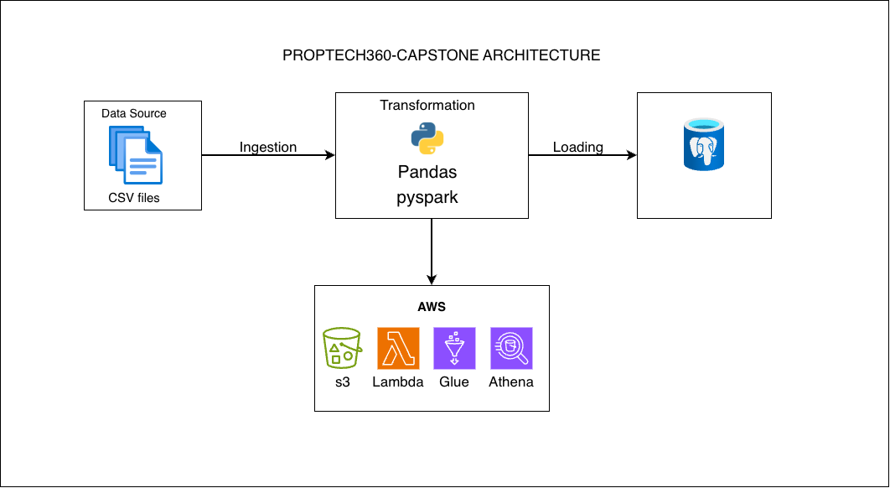
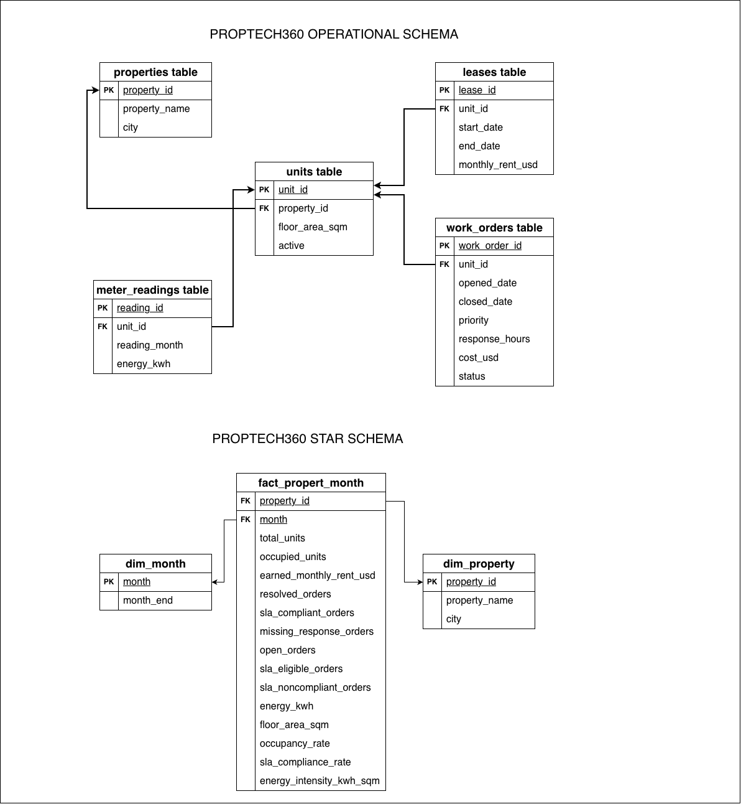

Occupancy
Which properties have the strongest occupancy? Measure occupied active units against all active units at month end.
Property management · Data engineering
From five imperfect CSV extracts to a monthly view of occupancy, rent, maintenance and energy. A reproducible pipeline built with Python, Spark, PostgreSQL and AWS.
Project overview
Property teams need to know which units are occupied, what rent their leases represent, whether maintenance meets response targets, and where energy use is high. PropTech 360 connects those questions through a shared property-and-month reporting model. The capstone uses fictional records for January–June 2026.
Business questions
Each metric has a clear definition, so a portfolio manager can understand both the result and the records behind it.
Which properties have the strongest occupancy? Measure occupied active units against all active units at month end.
How much monthly rent do active leases represent? Report by property and city, with contractual rent kept distinct from cash collected.
Are resolved work orders meeting their Service Level Agreement? Missing response times count as noncompliant.
How much energy is recorded each month? Compare property consumption per square metre with the portfolio benchmark.
Which records cannot be trusted? Retain invalid rows in quarantine with their original values and explicit rejection reasons.
Can the same inputs produce consistent results? Track source hashes, replace derived files, and upsert database rows safely.
Five project topics
The notebook and Python modules follow the same stages. Each stage produces a clear output that the next stage can validate and use.
Read properties, units, leases, work orders and meter readings. Check required columns and save row counts, timestamps and SHA-256 hashes.
Parse dates and numbers, check identifiers and relationships, and split accepted rows from quarantine. Input rows must equal accepted plus rejected rows.
Build month-end lease snapshots. Aggregate rent, occupancy, maintenance and energy separately, then write 72 unique records as month-partitioned Parquet.
Create the configured database if missing, then load property and month dimensions with a monthly fact table. Upsert existing keys, enforce constraints, and compare stored metrics with Spark output.
Upload raw CSVs and curated Parquet to S3. Lambda audits raw arrivals; Glue describes the curated dataset so Athena can query it.
Spark performs the transformations locally. The S3-triggered Lambda records arrival metadata; curated Parquet is uploaded separately.
Dimensional model
A star schema uses two dimensions to provide the reporting context. A shared fact table holds counts and amounts, while PostgreSQL calculates rates from those totals. The combined property and month key prevents duplicate facts.
dim_propertyProperty identifier, name and citydim_monthFirst day of each reporting monthfact_property_monthOccupancy, rent, work orders, energy and floor area
portfolio_dashboardMonthly totals and weighted portfolio rates
12 properties × 6 months
72 unique property-month records
Occupancy · Rent · SLA · Energy
Local orchestration
Enable and manually trigger proptech360_dag in the Airflow UI. The DAG runs one pipeline at a
time to protect shared output folders. Runtime files stay inside the project.
extraction_layer reads the five CSV files, checks data quality, and writes accepted and
quarantined records.
transformation_layer builds monthly KPIs and writes Parquet. Spark workers use the same
Python interpreter as the task.
loading_layer upserts the PostgreSQL mart, reconciles metrics and exports analytical
results.
Failed tasks retry once after one minute. Optional failure emails require an alert address and an SMTP connection. Each Spark task closes its session. AWS uploads remain a separate step.
The loader creates the configured PostgreSQL database when needed. PostgreSQL must already be running, and the database user needs permission to create databases for the first load. Batch writes use psycopg2; verification reads use the PostgreSQL JDBC driver.
Project design
Explore the pipeline architecture and reporting model alongside the notebook and source modules.


AWS operation
The handler in aws/lambda/lambda_handler.py audits nonempty raw CSV uploads. It records
source metadata in S3 and logs accepted files to CloudWatch.
Test events must include eventSource: aws:s3 and an ObjectCreated: event name.
A successful invocation with zero audited files means no file completed auditing.
The source bucket, object key and version or ETag determine the audit filename. Repeated notifications overwrite the same audit rather than adding duplicates.
Scope read permissions to project files, the Lambda function, Glue tables and logs. A console filter is not a security boundary; account-wide discovery can reveal unrelated resource names.
Athena needs the six month partitions registered in Glue. Its CSV query results are separate from the curated Parquet dataset. A dedicated project workgroup can isolate query history; its deployment is not verified by the saved evidence.
Recorded results
The saved comparison matches local Parquet with PostgreSQL dashboard results for each month, rounded to two decimals. This comparison uses existing artifacts; it is not a live database query.
| Month | Local Parquet (kWh) | Saved PostgreSQL (kWh) | Difference (kWh) |
|---|---|---|---|
| 2026-01-01 | 160,098.66 | 160,098.66 | 0.00 |
| 2026-02-01 | 169,242.08 | 169,242.08 | 0.00 |
| 2026-03-01 | 166,593.93 | 166,593.93 | 0.00 |
| 2026-04-01 | 165,089.40 | 165,089.40 | 0.00 |
| 2026-05-01 | 167,188.95 | 167,188.95 | 0.00 |
| 2026-06-01 | 161,039.67 | 161,039.67 | 0.00 |
The test suite covers ingestion, validation, Spark, database configuration and PostgreSQL integration.
Audit screenshots capture the source file, size, ETag and accepted status. Repeated notifications use the same audit key.
Query captures are available. Their month values are blank, so the Glue partition setup still needs correction before monthly AWS reconciliation is complete.
Organized artifacts include the ingestion manifest, quality report, database queries and AWS screenshots. The evidence index records outstanding captures.
Technology
Have a project in mind? I'd love to hear about it. Send me a message and let's discuss how we can turn your data challenges into opportunities.